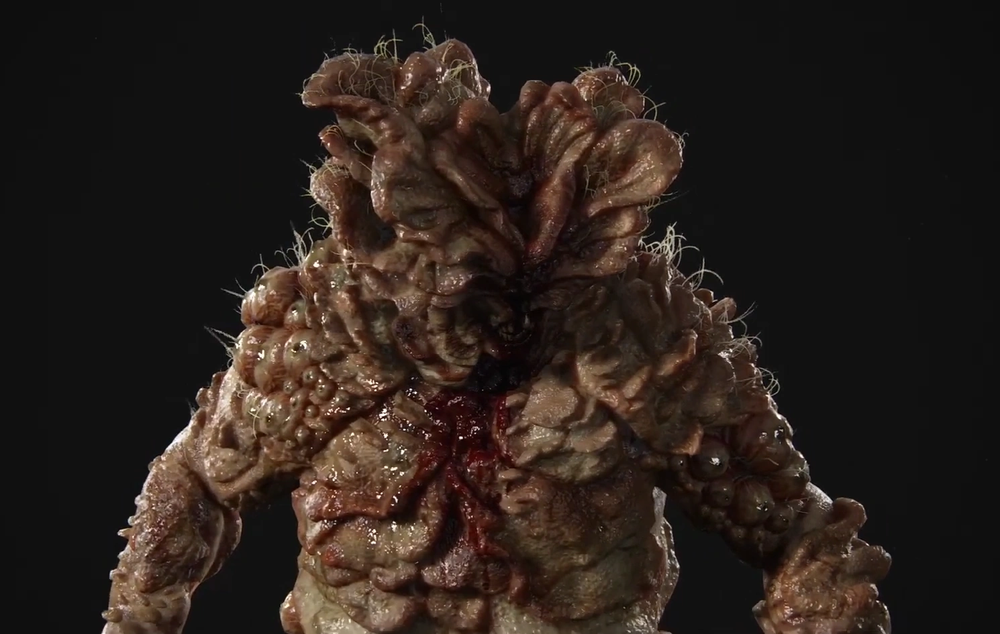

Zona de Cuarentena: Registro de Supervivientes
Formulario oficial de la FEDRA
Formulario de Ingreso
Nombre completo:
Edad:
Última ciudad conocida:
¿Infectado?
No
Sí
Observaciones (mordidas, heridas, etc.):
Confirmo que no he sido mordido en las últimas 48 horas.
Enviar registro
Últimos Supervivientes Registrados
Nombre
Edad
Estado
Joel Miller
52
No infectado
Ellie Williams
19
Inmune
Tess Servopoulos
36
Infectada
Foto real de un Gordinflon <3

FEDRA monitorea zonas de cuarentena. Mantente alerta. No salgas sin autorización.